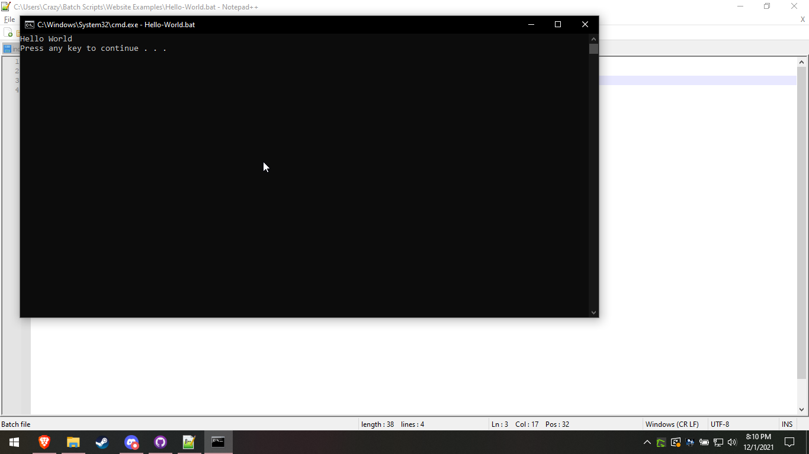

Lets hope you know command prompt at least some, if not you will have fun messing with it. Trust me.
Now that you have hopefully messed with the terminal some, I am going to go ahead and explain everything anyways.
So do you know how to make a file with the extension .bat? no? ok.
1. Open Notepad or notepad++,
2. Hit CTRL+S
3. Hit "Text Documents (*.txt)
4. Hit "All Files (*.*)"
5. Name it whatever you want, but with .bat at the end.
Now that you have a batch file, lets write in it.
Do the Following Lines
echo off -- This is telling the computer to not show commands to user, user will think it haxxing if not done.
cls -- This is telling the computer to get rid of the echo off command that was showing on the command prompt window
echo Hello World -- This is telling the computer to put the words "Hello World" into the terminal.
pause -- This is telling the computer to pause the command prompt until user inputs any key, it is so they can see the "Hello World". In a case that the script is just doing a quick thing though, you do not want to have this line.
